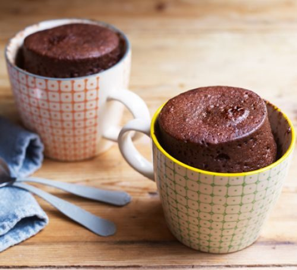

Mug Cake

Description
This recipe makes a delicious and convinent cupcake in a mug using just your microwave.
Ingredients:
- 4 tablespoons all-purpose flour
- 3 tablespoons granulated sugar
- 1/4 teaspoon baking powder
- Pinch of salt
- 3 tablespoons milk
- 1 tablespoon vegetable oil
- 1/4 teaspoon vanilla extract
- Optional: chocolate chips, sprinkles, or other mix-ins of your choice
Procedure:
- Prepare the batter: In a microwave-safe mug or cup, whisk together the flour, sugar, baking powder, and salt until well combined.
- Add wet ingredients: Pour in the milk, vegetable oil, and vanilla extract. Stir until the batter is smooth and no lumps remain.
- Optional mix-ins: If desired, fold in chocolate chips, sprinkles, or any other mix-ins of your choice into the batter.
- Microwave: Place the mug in the microwave and cook on high power for about 1 minute and 30 seconds to 2 minutes, or until the cupcake has risen and set in the middle. Cooking time may vary depending on the wattage of your microwave, so keep an eye on it to avoid overcooking.
- Cool and serve: Carefully remove the mug from the microwave (it will be hot!) and let the cupcake cool for a minute or two before eating. You can enjoy it straight from the mug or transfer it to a plate for serving.
- Optional toppings: If desired, you can top the cupcake with whipped cream, frosting, or a dusting of powdered sugar before serving.